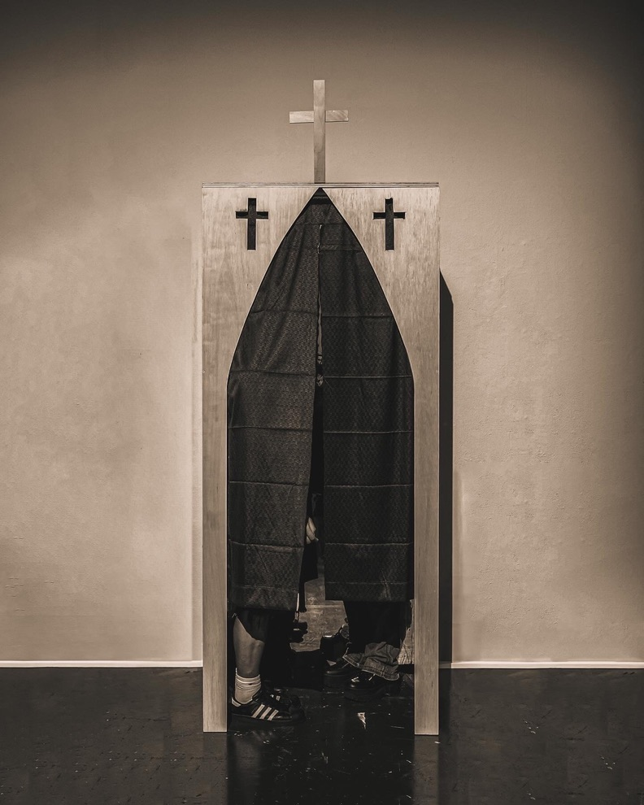
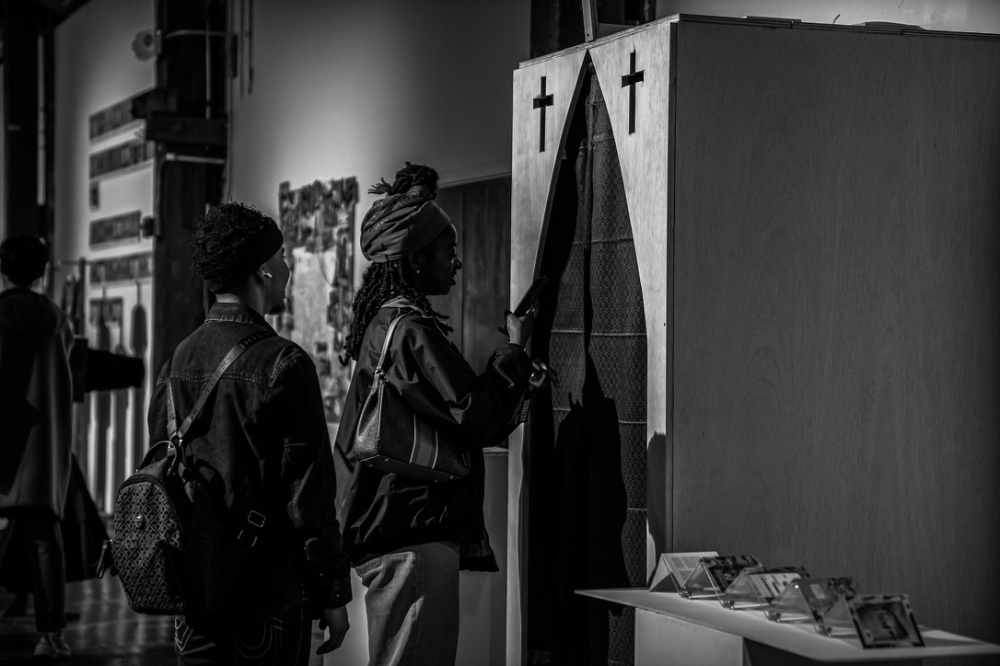

Mirrored Confessional
A multimedia installation exploring self-reflection, anonymity, and confession. Designed as an interactive space, the project invites participants to engage with their own image while listening to pre-recorded confessions. The mirrored booth blurs the line between the observer and the observed, creating a layered, introspective experience.
Project Images

